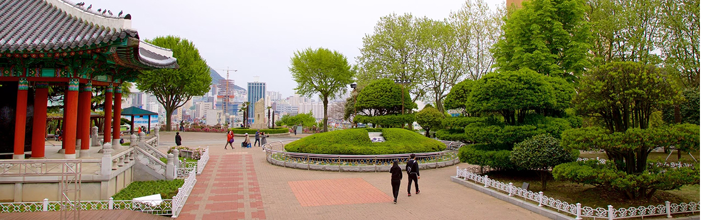

1. Templo Haedong Yonggungsa
O Templo Haedong Yonggungsa é um templo budista localizado no
extremo nordeste de Busan. Construído em 1376, é um dos poucos
templos na Coreia construídos à beira-mar – você pode desfrutar de
vistas do Mar do Leste de um lado e de belas montanhas do outro.
Bom para:

3. Parque Yongdusan
O Parque Yongdusan, localizado no centro de Busan, abriga alguns
dos monumentos mais importantes da cidade. Você pode ver vistas
espetaculares do topo da Torre Busan, de 120 metros de altura. O
parque tem 2 museus – confira os instrumentos musicais
tradicionais no Museum of World Folk Instruments e mais de 80
veleiros coreanos no Exhibition Hall of World Model Boats.
Bom para:
- Casais
- Famílias
- Orçamento